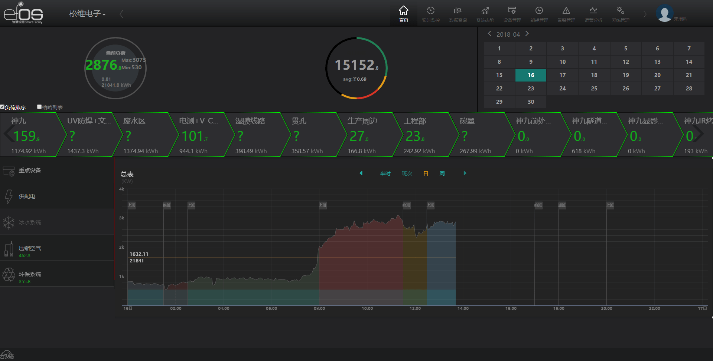
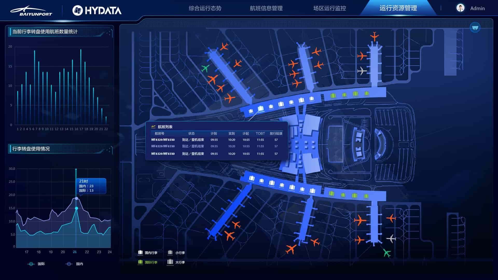

项目经验
迄今为止，本人做过的项目包括pc端、移动端、数据可视化等领域。具体技术方面，前端jquery+seajs，react技术栈，d3、echarts等可视化技术，后端采用C#开发，数据库用SQL Server。



机电设施运营监控平台
更多 >>

白云机场可视分析
更多 >>
白云机场可视分析
本项目使用react技术栈，结合echarts实现数据可视化。运用地图API，动态展示机场每架飞机的起飞、降落、空中运行状态、对应行李转盘等信息；通过在地图上标识酒店、停车场等，为机场提供便捷的配套服务；后台管理采用antd构建，主要运用了表单验证、列表、分页、树形菜单等。样式框架采用sass。